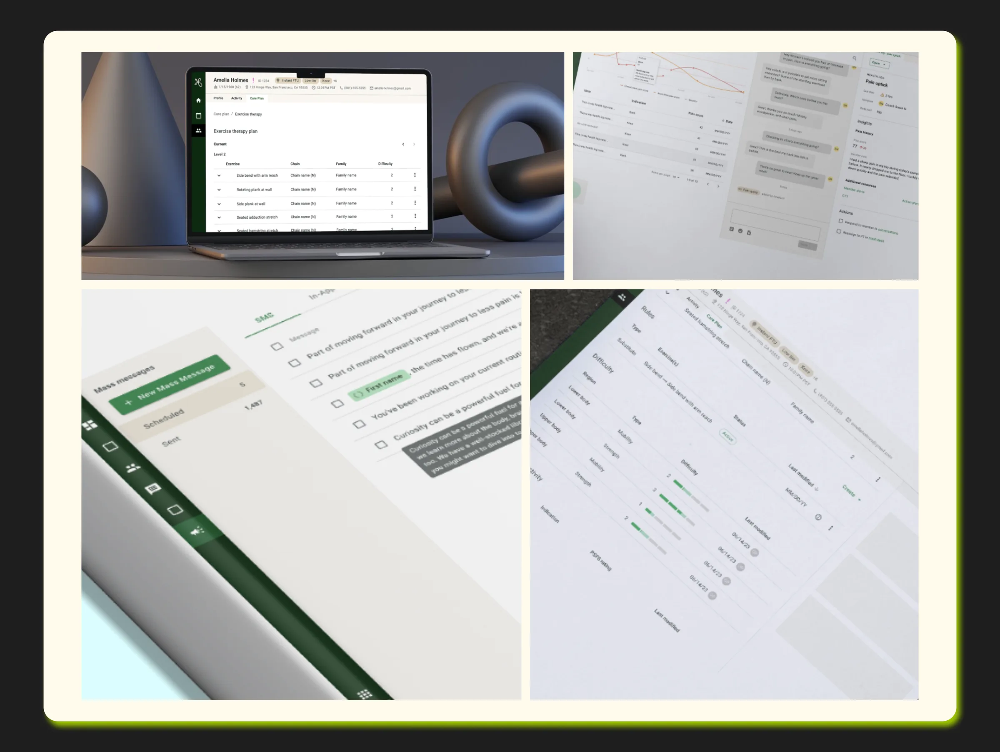

Problem Statement
How could we empower health professionals by helping them save time and increase productivity through a more efficient clinical dashboard?
Role & Responsibilities
As the Lead Product Designer, I led the design of the CareHub Dashboard — a central platform for clinicians, coaches, and trainers. I oversaw discovery, concept validation, and usability testing, and guided the team in creating scalable, data-driven design solutions.
I collaborated closely with engineering, ensuring seamless integration with backend systems and compliance with healthcare regulations. My leadership ensured the delivery of a unified dashboard that improved visibility, efficiency, and communication across care teams.
I led a small team of product designers. I onboarded new designers to the project, ran a weekly grooming session where I assigned tasks, checked on progress and removed any blockers, and oversaw design quality before anything shipped.
Research, Options & Trade-offs
What research revealed
Clinicians and coaches switched between several tools to prepare for a single member conversation. The biggest complaint was hunting for context, not missing data.
Directions explored
- Option A: A separate dashboard per role. Dropped: duplicated work and split shared member context.
- Option B: One unified dashboard with role-based modules and a shared member summary. Chosen.
Trade-offs
We prioritized the daily workflow views over advanced analytics and reporting, which moved to a later phase, and kept healthcare-compliance requirements on what each role could see.
High-Fidelity Designs
After validating the low-fidelity concepts, I transitioned to high-fidelity designs aligned with Hinge Health’s brand and design system. I refined UI components, typography, and hierarchy to ensure clarity and accessibility for coaches and clinicians.
Collaborating closely with engineers, I ensured feasible, production-ready designs, and created interactive prototypes to simulate real workflows for stakeholder review and usability testing.

Results
CareHub was adopted by 100% of health practitioners, who use it daily to manage and organize their schedules.
How we measured: daily active practitioners ÷ all practitioners, from product analytics.